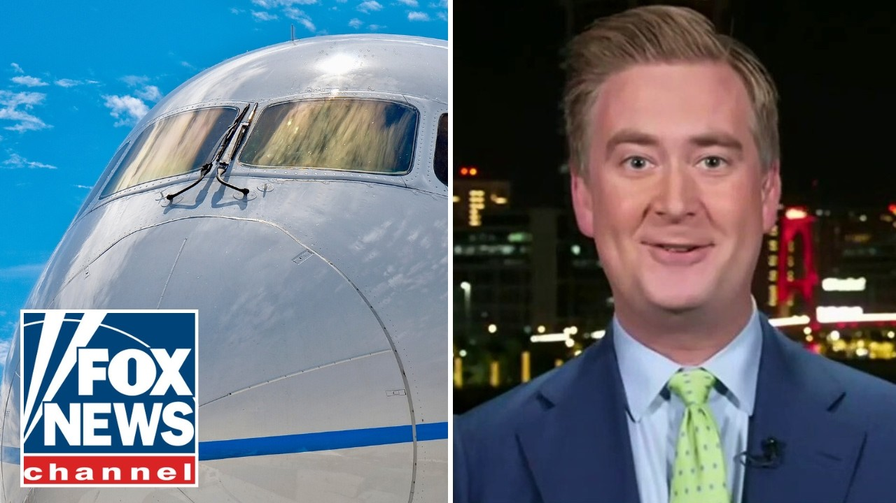

【有史以来最大的波音787订单？彼得·杜西带来特朗普“巨额”交易的最新消息】
Summary: President Trump secures major deals in the Middle East, including a record-breaking Boeing 787 order, while addressing regional issues like Iran's nuclear ambitions and lifting sanctions on Syria.
摘要： 特朗普总统在中东达成重大协议，包括创纪录的波音787订单，同时处理伊朗核野心和解除对叙利亚制裁等地区问题。

⏱️ Estimated Reading Time: 7 min
[Music] [Applause] Live from Texas, this is the Will Kaine Show.
[音乐] [掌声] 这里是德克萨斯现场直播的威尔·凯恩秀。
Over in Qatar, President Trump just wrapping up day two of his 4-day whirlwind M East trip and with a few handshakes, shaking up America's role in the region, securing deals at each stop.
在卡塔尔，特朗普总统刚刚结束了他为期四天的旋风中东之行的第二天，通过几次握手，改变了美国在该地区的角色，并在每一站都达成了协议。
Trump started the day with a face-to-face meeting with Syria's new president in Saudi Arabia, just a day after announcing that the US would lift sanctions on Syria.
特朗普当天以在沙特阿拉伯与叙利亚新总统的面对面会晤开始，就在宣布美国将解除对叙利亚制裁的一天后。
And he ended the day with a state dinner at a palace in Qatar, not to mention getting quite the warm welcome as he rolled up.
他以在卡塔尔宫殿举行的国宴结束了一天，更不用说在他抵达时受到了非常热烈的欢迎。
Let's get right into it with someone who's been traveling with the president, Peter Ducey.
让我们直接与一直随总统出行的彼得·杜西谈谈。
Peter and Will, ultimately if all these deals President Trump has been making in the region are going to pan out to their full potential, then Iran needs to stop trying to make a nuclear weapon.
彼得和威尔，最终如果特朗普总统在该地区达成的所有这些协议要发挥其全部潜力，那么伊朗需要停止试图制造核武器。
And President Trump today said he has got officials here trying to help make that happen.
特朗普总统今天表示，他已经派官员在这里努力帮助实现这一目标。
I hope you can help me with the Iran situation because it's a perilous situation and we want to do the right thing.
我希望你能帮助我处理伊朗局势，因为这是一个危险的局势，我们想做正确的事情。
There was also an enormous transaction today.
今天还有一笔巨额交易。
President Trump had the Boeing CEO by his side as Cutter Airlines agreed to pay $96 billion for 210 Boeing aircraft.
特朗普总统身边站着波音公司的首席执行官，因为卡特航空公司同意以960亿美元购买210架波音飞机。
The White House says it is the largest 787 deal ever.
白宫表示这是有史以来最大的787订单。
The president also spent some time this morning dropping all US sanctions on Syria and he was very taken with their new president who until pretty recently had a $10 million US bounty on his head.
总统今天早上还花了一些时间取消美国对叙利亚的所有制裁，他对他们的新总统非常着迷，而这位总统直到不久前还有1000万美元的美国悬赏。
I think very good young attractive guy tough guy you know strong very strong fighter.
我认为他是一个非常好的、年轻有魅力的硬汉，你知道的，非常强壮的战士。
So, President Trump on this trip is trying to give some of these Middle Eastern countries that have been struggling or have been war torn over the last couple decades the opportunity to help themselves.
因此，特朗普总统此行试图给一些在过去几十年中一直挣扎或饱受战争摧残的中东国家提供自助的机会。
He does not think they have been well served by what he calls nation builders.
他认为他们并没有从他所谓的国家建设者那里得到很好的服务。
And he thinks I he is very taken he's told us with this new Middle East that is instead being built by regional businessmen who are putting together projects like this.
他认为，他告诉我们，这个新的中东是由地区商人建立的，他们正在整合这样的项目。
Will, that's beautiful.
威尔，这太棒了。
It is grand.
这很宏伟。
And that raises a question I'm curious, Peter, if you've had some perspective on over the last couple of days.
这引发了一个问题，我很好奇，彼得，你在过去几天里是否有一些看法。
President Trump receiving a warm welcome and being received by royalty, being received like royalty by royalty.
特朗普总统受到热烈欢迎，受到王室的接待，像王室一样受到王室的接待。
But I'm curious what the atmosphere is outside of Riad or outside of Doha.
但我很好奇在利雅得或多哈以外的气氛如何。
I don't know if you had a chance to escape the big city centers or at least hit the streets.
我不知道你是否有机会逃离大城市中心，或者至少走上街头。
I'm just curious still what the attitude is of the Arab public in the Gulf States towards America.
我只是仍然好奇海湾国家的阿拉伯公众对美国的态度。
Look, the places that we go uh we have not left the big cities of Riad or of Doha, but uh there are buildings here away from where the president are that have giant American flags being projected uh or lit up with LED lights on the whole side of an entire skyscraper.
看，我们去的地方，我们没有离开利雅得或多哈的大城市，但在这里远离总统所在的地方，有建筑物上投射着巨大的美国国旗，或者整栋摩天大楼的一侧用LED灯点亮。
When we were driving through Riad, pretty much everywhere that you go, there are US and Saudi flags.
当我们开车穿过利雅得时，几乎你去任何地方，都有美国和沙特国旗。
Uh this is a top everywhere that we are going it is a topdown um enthusiasm.
呃，这是我们去任何地方的最高层，这是一种自上而下的热情。
The leaders really want to have President Trump here and they have the ability in these countries to make sure that uh it looks like every single person on the ground is wel welcoming them and I our experience has been that people are happy to have President Trump here.
领导人真的希望特朗普总统在这里，他们在这些国家有能力确保看起来地面上的每一个人都在欢迎他们，而我们的经验是人们很高兴特朗普总统在这里。
He was very warmly uh welcomed yesterday by all these Saudi businessmen who seemed like they were genuinely interested to hear what he had to say at what kind of felt like a Trump rally at times.
昨天他受到了所有这些沙特商人的非常热烈的欢迎，他们似乎真的有兴趣听他在某种感觉像是特朗普集会的时候说的话。
Uh the the first one overseas as 47 and today it's the same thing.
呃，这是47岁时的第一次海外之行，今天也是一样。
Yeah, obviously that's been a Trump rally.
是的，显然那是一场特朗普集会。
Uh all right, I've been to a Trump rally or two as I'm sure you have as well, Peter.
呃，好吧，我去过一两次特朗普集会，我相信你也去过，彼得。
I would love to see what the comparison is between the audience at a Trump rally and the one that is in the palaces of the Middle East.
我很想看看特朗普集会的观众与中东宫殿里的观众之间的比较。
But we appreciate the report, Peter.
但我们感谢这份报告，彼得。
We'll check in with you soon.
我们很快会再联系你。
Thank you so much, Peter Ducey.
非常感谢，彼得·杜西。
Hey, Sean Hannity here.
嘿，我是肖恩·汉尼提。
Hey, click here to subscribe to Fox News YouTube page and catch our hottest interviews and most compelling analysis.
嘿，点击这里订阅福克斯新闻YouTube页面，获取我们最热门的采访和最引人注目的分析。
You will not get it anywhere else.
你在其他地方都找不到。